|
Clusters
An emergent particle system with ambiguous entities Jeffrey Ventrella (latest update: December, 2024) Clusters was the inspiration for Particle Life by Tom Mohr. Clusters was also the inspiration for Atomic Clusters by ciphrd. Clusters was the basis for the "Circus of Life" project. Here's a video of me explaining Clusters Here's the Particles Video from Leap Motion Here's my Leap Motion video Play with Clusters -> Ventrella.com/Clusters |
(click/touch to randomize) |
|
"Sometimes it's hard for me to believe that all of the complexity that we see in our life can arise from particle physics. Even humans, thoughts, and emotions. But for me, seeing how Particle Life can already create these lifelike structures in a much simpler universe makes all of it a bit more believable." - - Tom Mohr, creator of Particle Life (transcription from this video) |
| 1. A gentle Introduction |
| YOU are a green dot. |
| You love yellow dots. Whenever you see a yellow dot, you move towards it. | 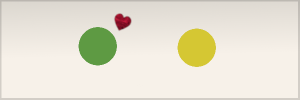 |
| But yellow dots are afraid of green dots. So the yellow dot runs away from you. (Life isn't fair). | 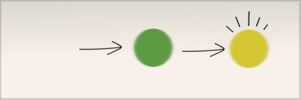 |
| You also love blue dots and blue dots love green dots. So whenever you meet a blue dot, you both gravitate towards each other. | 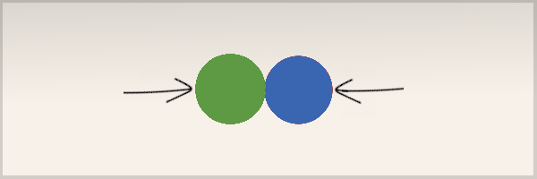 |
| What happens if a yellow dot stumbles onto your green-blue love-fest? It's afraid of you but it loves blue dots. Meanwhile the blue dot has just noticed a red dot which it finds very attractive. Now what happens? | 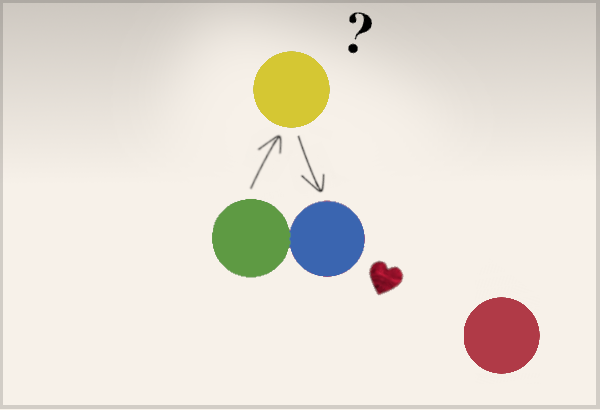 |
|
It's a complex system
I'll leave that question unanswered. (It's complicated). Now imagine that there are six kinds of dots (red, orange, yellow, green, blue, and violet). Each kind of dot has associated attractions or repulsions to all the other kinds of dots (including its own kind). |
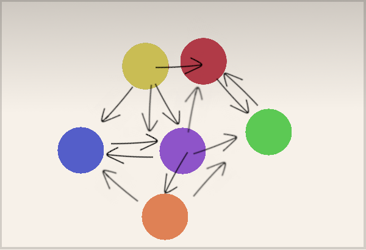 |
| Every kind of dot has a unique way of reacting to every other kind of dot. These are force fields, and they cause dots to attract or repel when they get near each other. These forces can be weak or strong. So, if there are six kinds of dots, then there are 6x6 = 36 unique kinds of force fields - all acting in unison. | 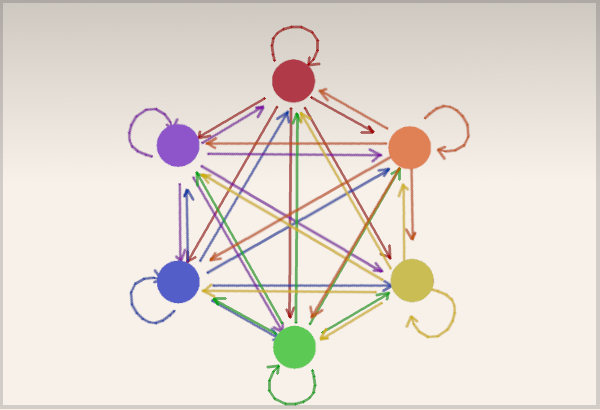 |
| 2. Is it biology or is it physics? |
|
It's a complex dynamical system that borrows some concepts from
biology and some concepts from physics. Choose your favorite
metaphor, but in either case,
Emergence
is the key concept here: something novel that comes into existence
when relatively simple rules play out among many
interacting parts. The concept of emergence can apply to both physics and biology.
It's remarkable how such a simple set of rules about the forces between dots can generate so many complex dynamical structures. It gets especially complex when there are thousands of dots involved. This is related to the "More is Different" concept, proposed by theoretical physicist Philip Anderson. 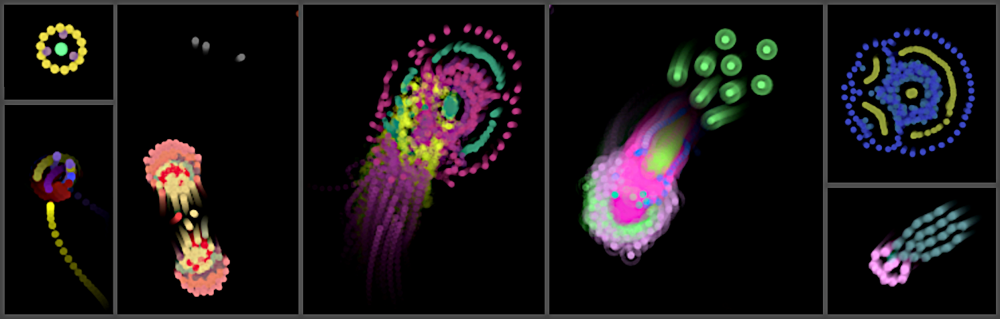 |
| We can talk about individual dots as little characters falling in and out of love, but what's amazing is that when certain clusters of different kinds of dots come together, they can act like a super-organism - like a multicellular creature that can shapeshift, split, and merge with other entities. That's why I like to use the term "ambiguous entities". Fans of plasmodial slime molds know what I'm talking about! | 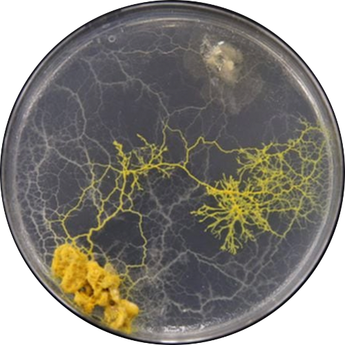 |
| 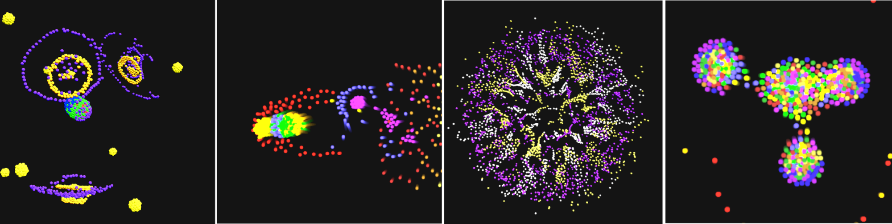 |
|
You may also be reminded of
Conway's Game of Life,
in which complexity emerges from a simple
set of rules being applied repeatedly over several identical
elements ("automata"). Each automaton is a cell in a fixed
grid and it responds to its immediate neighbors.
The Clusters particle system is similar in that there are many
"automata" (particles) and a simple set of rules that determine
their behaviors when they interact. Complex patterns emerge,
but it is of a whole different variety than cellular automata; it has
many more degrees of freedom, and is capable of a lot of chaos.
This idea of an automaton responding only to its immediate neighbors is called "locality". It's an important concept in emergent systems, according to theoretical physicist Sean Carroll. |
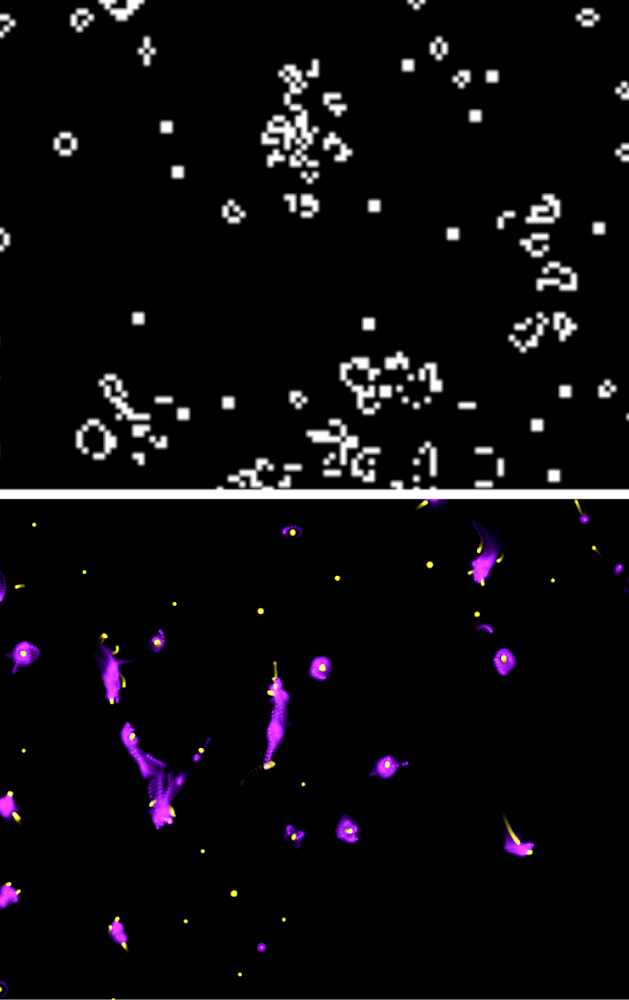 |
|
3. Anatomy of a force field
Molecular engineers know very well that there are astronomically many ways that atoms can be arranged to form molecules, including all the amazing biomolecules that comprise the machinery of life on earth. |
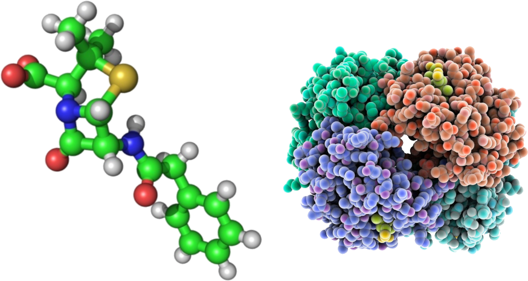 |
| Consider Interatomic Forces. When a pair of atoms are close to each other, they attract, but if they get too close, they repel. And so they each settle into a comfortable distance. This graph plots a force field as a function of the distance between a pair of atoms, with zero at the left and approaching infinity at the right. The vertical axis represents the force (the "interatomic potential"). Forces above the horizontal line are repulsive, and forces below the line are attractive. Pairs of atoms naturally settle to the equilibrium distance. | 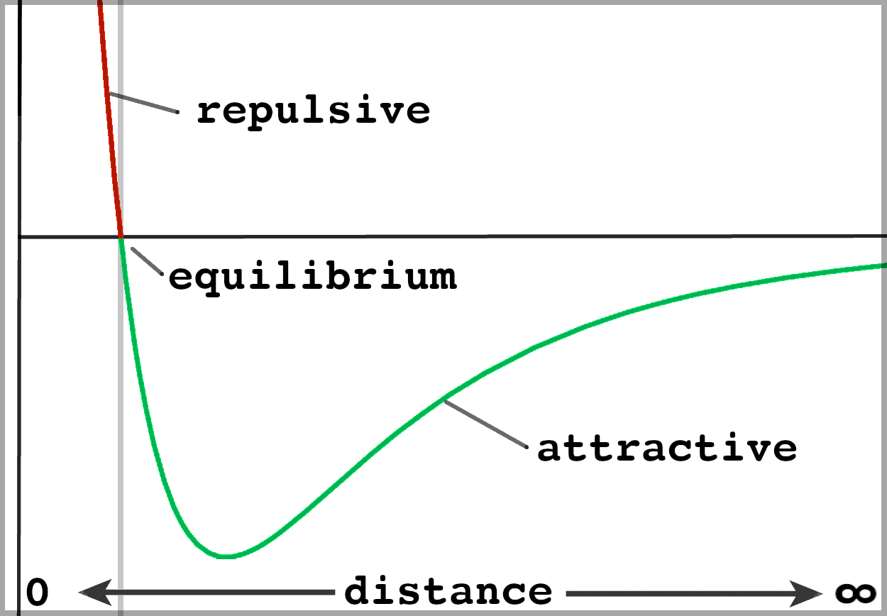 |
| In the real world it's way more complex than this; there are many kinds of particle forces involved, and many kinds of atoms, all of whom have different opinions on how to share electrons and whatnot. When you consider large protein molecules interacting with each other, it gets crazy complex. This is related to the field of artificial chemistry That's all I'm going to say about physics. The important take-away here is the general concept of a force-field: the way atoms (or dots, or particles) attract or repel according to their distances to each other. |
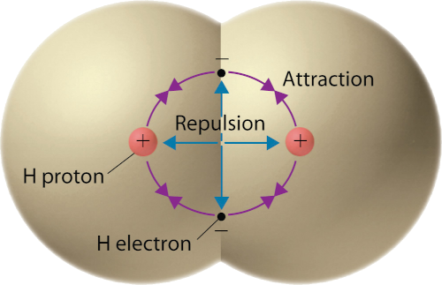
|
|
Let's break some rules
Now, according to Newton's 3rd law of motion, every action has an equal and opposite reaction. If two bodies exert forces on each other, these forces must have the same magnitude and they must have opposite directions. When two billiard balls collide, they both experience the same amount of force but in opposite directions. The Clusters algorithm allows Newton's law to be broken; forces can be asymmetrical. And that's why one dot can chase another dot around...and the other dot just keeps running away...(forever, or until the chase scene gets interrupted by other nearby forces). This creates constant motion, as if some continual energy source were at play. So, we're not talking about physics anymore. Now we are pretending that these are self-propelled entities. Biological metaphor And that's where the biological metaphor comes in. The energy sources are "inside" of the dots (they are well-fed and socially-motivated). We have abstracted away the physics level and are now looking at these dots as very simple (and very motivated) organisms. The details of locomotion are abstracted away, and so we can talk about higher-level behaviors, like the way humans move through large crowds or the way cells differentiate into tissues. The goal here is not to model anything specific in the real world, but to set up a dynamical system that generates patterns and behaviors that have things in common with natural systems. And yea, sometimes it just looks really cool. |
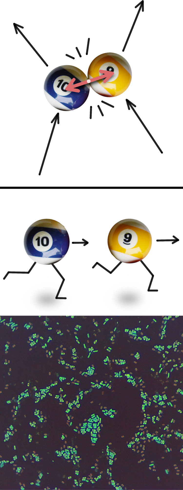 |
|
4. A trail of experiments
Now I want to show a series of five algorithmic experiments intended help explain how the algorithm evolved. You can select each image at left to see animated examples. These are not necessarily in chronological order. |
| 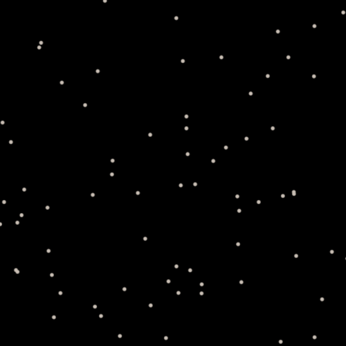 (select image to see example) |
1. Simple Particle System
This one's easy: I initialize a bunch of particles randomly, give them each an initial random jolt of velocity, and then watch them shift until friction causes them to slow down and eventually come to rest. Particles don't know or care about each other. This is ground zero for all subsequent experiments. |
| 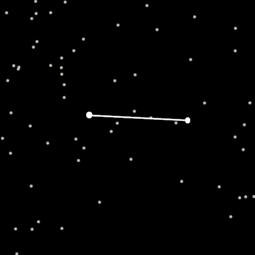 (select image to see example) |
2. Springs!
Take two of these particles and draw a line between them. Make them "want" to stay a certain distance from each other. If the distance gets too small or too large, they both get forced (in opposite directions) along the line until they come to rest at the right distance, after a bit of oscillating. This is just basic spring physics. |
| 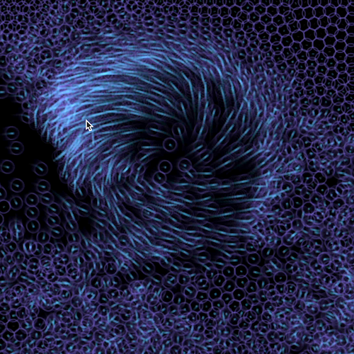 (select image to see example) |
3. Particle Fluid
You could say that one half of a spring force is the half that pushes particles apart if they get too close. Well, this half is synonymous with a soft collision between two particle dots (disks with radii). Packing a lot of dots into a tank and giving them soft collisions creates a fluid-like effect (well, more or less, depending on the parameter settings). |
| 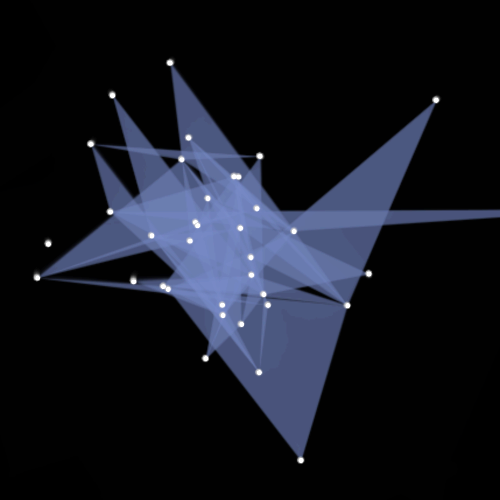 (select image to see example) |
4. Pseudo-Springs
Here's where the real fun begins. When two particles are connected by a spring, they both get forced in opposite directions with the same magnitude. Let's pretend that these dots don't want to participate in this silly rule, and they choose their own forces, which may be attractive or repulsive. Essentially the particles disagree on the spring length. As you might expect, the results are a bit strange - it looks like a weird perpetual motion machine. |
| 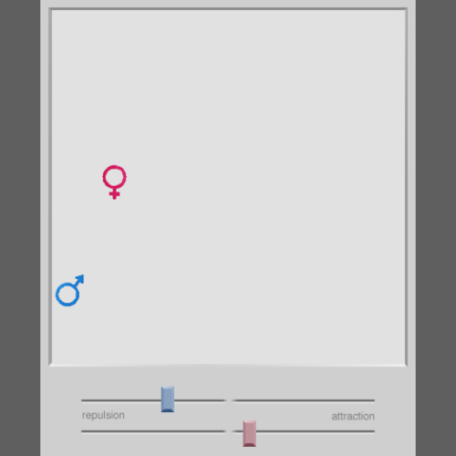 (select image to see example) |
5. Attractions and Repulsions
Jumping back in time a bit; when I was a research assistant at the MIT Media Lab in the 90's, I made a simple simulation where you can adjust the attractions and repulsions between two particles. It was designed as a simple "microworld" - a digital plaything - a tool to think with. This example is a variation of that simulation. Like the pseudo-springs, the forces are asymmetrical, which makes the particles act more like organisms in a relationship than particles obeying Newton's laws. |
|
5. Generalized force fields
Imagine that each particle is surrounded by a circle that represents its "view horizon", as shown here with a green and red particle. These particles cannot "see" anything outside of their circles. The green particle has a red circle to symbolize its response to red particles (referring to the specific force field that comes into effect when a red particle enters the circle (comes into view)). Likewise, the red particle has a green circle. If these two particles get close enough, one or both of them will enter into the circle of the other. That would trigger a force response, as determined by their particular force parameters. Now imagine if the green particle had a larger circle than the red particle. If these particles were gradually moving towards each other, the green particle would see the red particle sooner than the red one would see the green one. This is an asymmetrical feature in the physics of this world. The other asymmetrical feature is the difference in force field profiles between the two particles. |
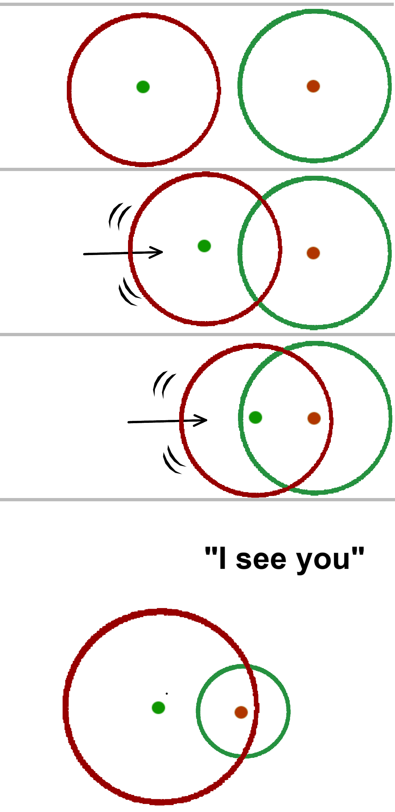 |
|
Now I want to show you a correspondence between these circular
view horizons and the force field diagram I showed earlier.
Below is a graph showing a typical force field used in
the Clusters algorithm. In this graph I've flipped the potential axis
upside-down so that attractive forces (green gradient) are above
and repulsive forces (red gradient) are below. The magnitude
of the force is visualized as the intensity of red or green. The
corresponding view horizon circle is
shown at right. The extent of the force field from left to
right (ranging from 0 to r2) maps to the radius of
the view horizon circle. The equilibrium distance is shown as e.
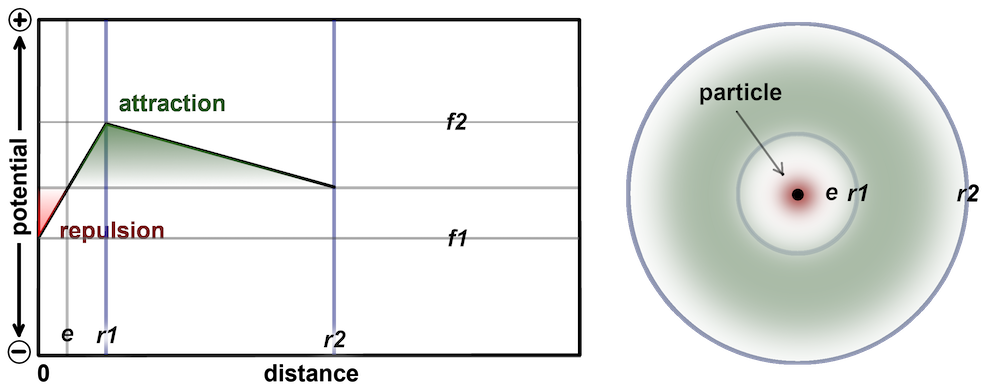 Instead of having curvy lines like the interatomic force graph, these force-fields have sharp thresholds with linear ramps between them. It is a simplified variation on the natural force field, allowing for arbitrary parameters (where the proper laws of physics need not apply). There are 4 parameters: r1 and r2 ("radius 1" and "radius 2") which refer to the two distance thresholds, and f1 and f2, which refer to the two force thresholds. The value of f1 can never be positive, but the value of f2 could be either positive or negative (see the other force field examples below). Below is another force field where the force is constant along a stretch of distance between r1 and r2. In addition to the four values described above, there is another value that determines whether the force tapers down to zero at distance r2, or stays at a constant level until distance reaches r2. Within this distance range, the particle will be forced toward the other particle at a constant rate. Notice at the critical distance r2 there is a sharp cutoff. An aggregate of particles exhibiting sudden changes in velocity is a common behavior when force fields have this feature. The original version of Clusters uses this flat force. I latter added the parameter allowing for the optional tapering down to zero. 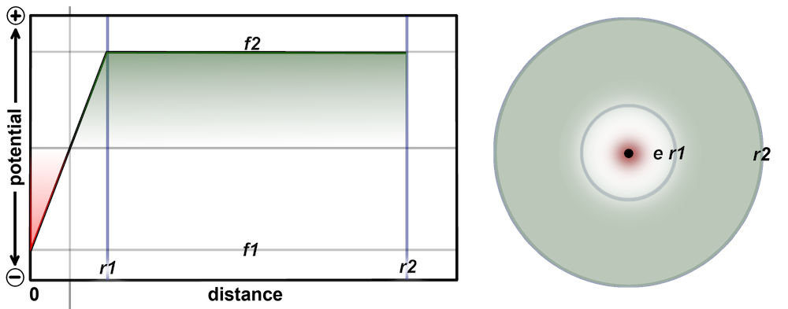 |
|
Given these five parameters, many kinds of force fields
can be specified. Below are a few examples.
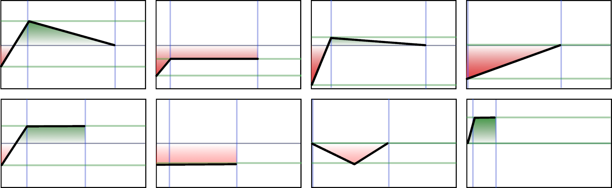 You could think of the Clusters algorithm as a collection of generalized force fields. They determine inter-particle forces as a function of distance. The profile of a force field could in fact be anything (like, any squiggly line that extends from left to right). But the Clusters algorithm was designed to use relatively few parameters enabling a large space of possible force fields. A single force field on its own is not especially interesting, but the combination of several kinds of force-fields, acting in parallel, and the fact that there can be many thousands of particles, makes it quite interesting. And that brings us to the subject of species and ecosystems. |
|
6. Particles, species, and ecosystems
There are three basic components to the Clusters universe: 1. Particle: A particle is a point-mass (a tiny dot) with a position, a velocity, and a color. The size of the dot is a purely visual attribute and has no affect on physics. 2. Species: The color of a particle represents its species. Each species interacts with other species in specific ways, as determined by its genetics. All particles of a particular species have the same gene values. Think of foxes and rabbits: foxes are genetically predisposed to chase rabbits, and rabbits are genetically predisposed to flee from foxes. Rabbits are also genetically predisposed to chase carrots (although carrots are not genetically predisposed to run away from rabbits). 3. Ecosystem: An ecosystem is a collection of particles of one or more species. In the natural world, species co-evolve in the context of other species. The genetic code of any one species is meaningful in terms of how it interacts with its environment, and that includes all the other species it encounters in its world. This world comprises the species' umwelt. |
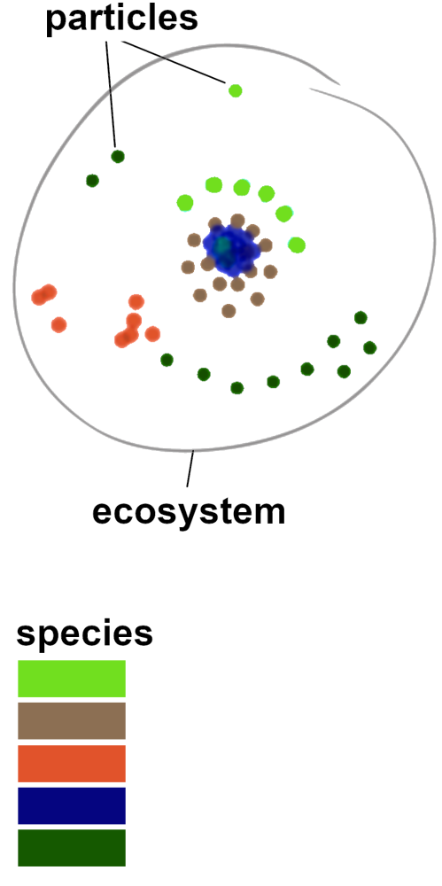 |
| We can think of an ecosystem as a complex adaptive system in which all the genes of all the species have been designed (or evolved using a genetic algorithm) to give rise to complex dynamics of one kind or another. An ecosystem can be bred to resemble a living system or a pseudo-fluid, or many possible strange and wonderful dynamical scenarios. The important concept here is that the genes of [all] the species in the ecosystem determine its overall character. |
|
7. Delayed reactions and hysteresis
Now I want to explain one of the more subtle aspect of the Clusters universe: species can have a lag in their responses when interacting with other species. This is related to the concept of hysteresis, which is a normal part of many biological processes, as well as a necessary aspect of many engineered control systems. |
| Consider the many communication and control systems operating in your body all the time. It takes time for chemical and electrical signals to move from your liver to your bloodstream, or from your fingertips to your brain. It takes time for various internal sensors in your body to detect changes in the level of carbon dioxide, or serotonin, for instance. The delays vary from system to system, but the overall dynamic is stable (if you are healthy). This create a kind of dynamic equilibrium: always shifting and adjusting in its parts but stable overall on the macro scale. This is related to the subject of morphogenesis. | 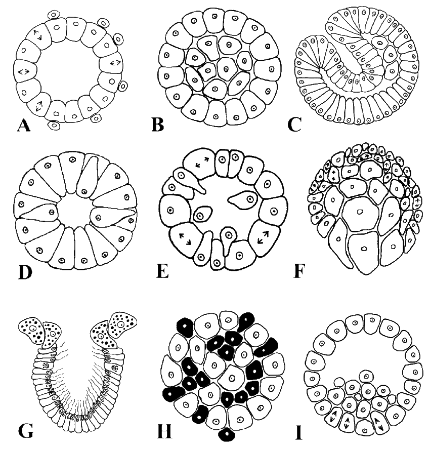 |
|
In the Clusters universe, these intertwined delay mechanisms
can sometimes cause emergent
rhythms and cycles having longer periods, giving rise to new
levels of complexity. A simple engineered feedback system that is not
properly calibrated can suffer from unwanted oscillations.
But I love these unexpected emergent effects. They can sometimes
be an integral part of the way
a big cluster blob moves around. In other words, these emergent,
highly-tangled oscillations can be exploited to create mobility, as well as
many interesting space-time patterns.
The Clusters algorithm achieves this extra level of complexity by simply having particles of different species delay their force responses by differing amounts (ranging from 0 to 5 time steps). That may not seem like a very long delay when you consider that the animation is typically running more than 30 time steps per second (ideally more than 60). However, that small delay (and the fact that different delays can be in effect among several species of particles) gives rise to dynamical patterns that are surprising and almost impossible to predict from just considering the delay values on their own. This is the nature of Emergence. |
|
8. Variations
Soon after I first presented Clusters on social media around 2016, it got the attention of some generative artists and fans of animated artificial life. I want to introduce a few variations based on the algorithm and some examples of related simulations. |
|
Leap Motion Virtual Reality Particles
Leap cofounder Dave Holz invited me to collaborate with his development team in 2017 to implement the Clusters algorithm in virtual reality. We created a very cool demo where users can manipulate particles with their hands, using Leap technology. This video shows off the capabilities of what can be done with finger-level manipulation of thousands of particles. |
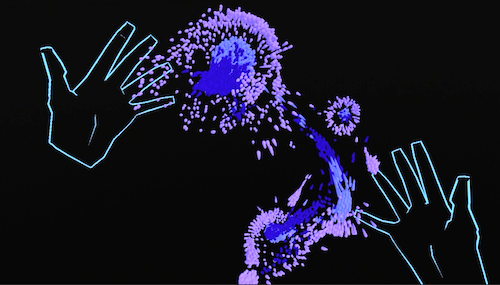 |
|
Particle Life
A beautiful variation of this algorithm was created by Tom Mohr (https://tommohr.dev). He started working on it in 2018. It's called Particle Life. Tom has simplified the rules for elegance and to make the concept easier to explain while still having an immense amount of emergent patterns. This video gives a nice explanation of the code behind particle Life, and it is a good compliment to my description here. |
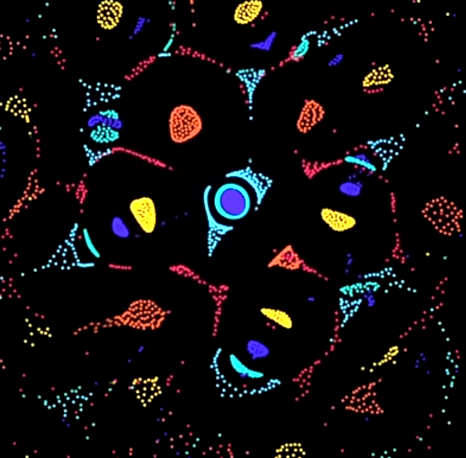 |
|
Atomic Clusters
A variation of the Clusters algorithm called Atomic Clusters was created by ciphrd in 2020. His simulation creates beautiful organic behaviors, and he even designed a lower-level model based on imaginary subatomic particles sharing electrons in various ways. This enabled him to generate directional patterns among clusters. It is described on this web page and includes technical details and access to the code. |
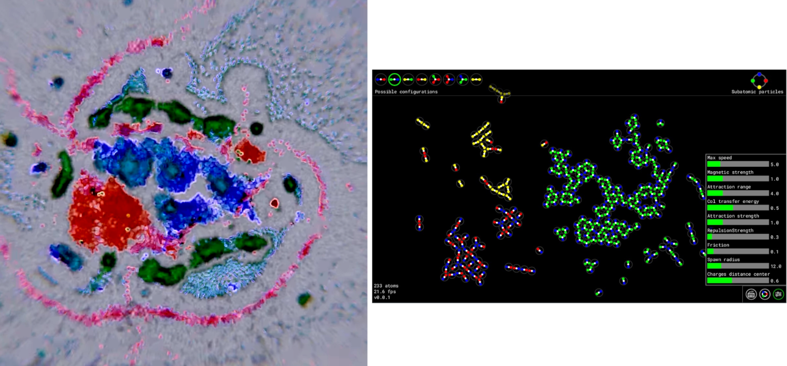
|
|
Circus of Life
Canton Becker and I collaborated on an NTF project called Circus of Life. It can be viewed on a site called fxhash and it features generative art on the blockchain. |
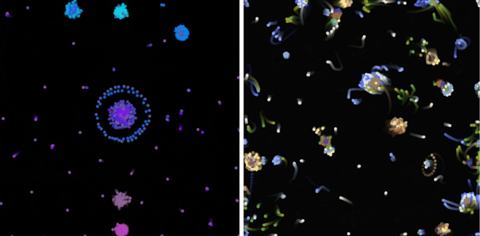 |
|
Swarm Chemistry, Particle Lenia, and others
Several artificial life researchers have developed simulations involving "self-motivated" particles. Hiroki Sayama's swarm chemistry is an early example. A beautiful simulation called Particle Lenia was created by Mordvintsev, Niklasson, and Randazzo. There are many other examples; more than I can get into here. This kind of particle system has become popular, partly due to the fact that graphics hardware has become so amazingly fast - it is possible to animate tens of thousands of particles, giving rise to new complex spatiotemporal patterns that tickle the retina and baffle the mind. |
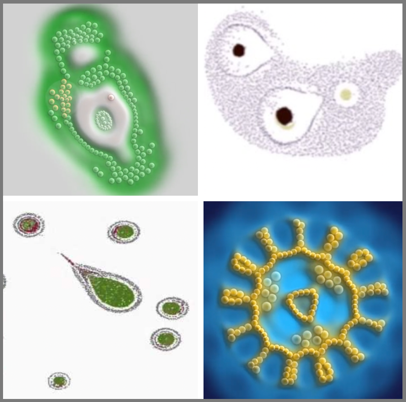 |
|
9. Final Remarks
I started this document simple and user-friendly, and concluded it with some gnarly concepts that can easily get quite sophisticated, more than I am qualified to dive into. At the time of this writing (December, 2024) I have done some preliminary experiments in using a genetic algorithm to evolve ecosystems. I am considering doing an artificial life research project to see if I can set up a fitness function that causes complex clusters to emerge and exhibit life-like behaviors. I can't give any more details than that at this stage (partly because they are not fully baked). Meanwhile, I hope you enjoy exploring Clusters. I would welcome comments or suggestions from anyone who has a vested interest in this subject. Please contact me at (jeffrey@ventrella.com) |
|
Play with Clusters Ventrella.com |